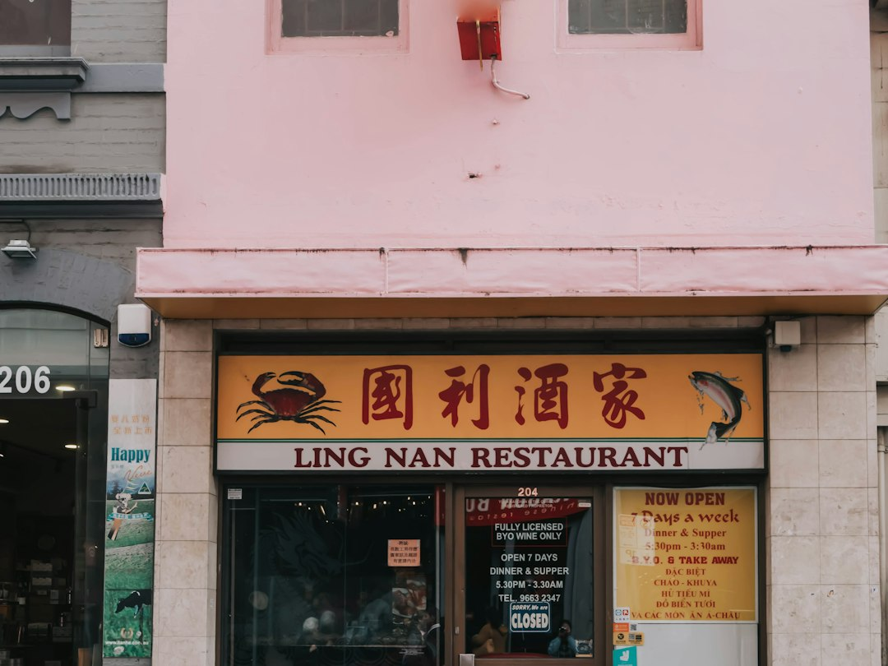

Melbourne diners can compare 9 listed provider types: Asian, casual and family, fine dining, Italian, modern Australian, restaurants, seafood, steak and grill, and vegetarian and vegan. The published directory says users can read reviews, view photos, compare services and pricing, and get quotes for free. It also presents featured venue profiles, location browsing, guides, and options for businesses to add or upgrade listings.
For diners comparing restaurants melbourne options, the useful starting point is deciding whether cuisine, location, occasion, reviews, pricing, or booking availability should lead the search.
Restaurants Melbourne Explained
Best Melbourne Restaurants describes a directory for discovering dining across Melbourne, with cross-checked listings, reviews, photos, pricing comparison and quote options. It works best when the diner has a real decision to make. A weeknight family meal, a private dining enquiry, a steakhouse booking, and a vegetarian dinner all call for different checks before contacting a venue.
Use the first constraint to shape the search. If the occasion is fixed, begin with food type or dining style. If travel time matters most, browse by location first. If the booking involves a group, function, or special menu, the profile and direct contact path become more important than a quick scan of names.
Turn categories into a decision path
The category list separates common dining intentions without treating every venue as the same choice. Asian, Italian, seafood, steak and grill, vegetarian and vegan, fine dining, casual and family, modern Australian, and general restaurant listings each support a different shortlist.
- Casual and family: check whether the listing, photos and reviews suggest the right tone for a relaxed group meal.
- Fine dining: look for menu, reservation and private dining information before assuming the venue can suit the occasion.
- Vegetarian and vegan: use the category fit to shortlist, then confirm the current menu with the venue.
- Steak, seafood and Italian: compare the category fit with photos, services and pricing signals before making contact.
Category browsing is a starting point, not confirmation. The Lucy Liu Kitchen and Bar profile says its official venue information covers menus, reservations and private dining or functions, and it tells readers to check current menus, trading details and booking availability.
Use location only when it changes the choice
Location browsing is useful when the meal has a travel limit or when the setting changes the decision. The directory shows location examples including Richmond, Carlton, St Kilda, Collingwood, Fitzroy, Northcote, South Yarra, Docklands, Southbank and Glen Waverley. Treat those names as entry points rather than a guarantee that every dining need is covered in each place.
A diner checking Southbank or Docklands may be weighing convenience around a city-side evening. Someone searching Richmond, Carlton or Fitzroy may still need to decide whether cuisine, group size or booking availability is the real filter. The stronger search question is whether the profile gives enough information to confirm menu fit, reservation path, function suitability and contact options.
For another directory-style entry point on the same topic, the related Melbourne restaurant guide gives a nearby way to keep browsing.
Who this applies to
This guide is for diners who want a structured way to shortlist venues before contacting them. It suits people comparing cuisine types, suburbs, function options, family-friendly meals, plant-based choices or a more formal dinner. It can also help businesses understand the listing path, because the directory says businesses can claim a free listing or upgrade to Pro for priority placement, photos and lead tracking.
It is less useful for anyone who needs a guaranteed current menu, a confirmed table, a trading-hours answer or a price quote immediately. Those details can change, so the final check should happen through the venue profile, the venue's own booking channel or direct contact.
Checks before contacting a venue
Use profile information to form a short enquiry before calling, emailing or requesting a quote through the form. A specific message gives the venue a better chance of replying with useful details.
- State the date, approximate time and number of diners.
- Say whether the meal is casual, family, private dining, a function or a special occasion.
- Mention any cuisine requirement, such as vegetarian and vegan, seafood, steak and grill, Asian or Italian.
- Ask whether the current menu, trading details and booking availability match your plan.
- Compare reviews, photos, services and pricing before treating one venue as the preferred option.
Read reviews as signals, not answers
The directory shows reviews and ratings on featured listings, including Lucy Liu Kitchen and Bar, Doju, North East China Family, Chocolate Buddha, and Marbl Steakhouse Prahran. Reviews can help with pattern recognition, especially when many diners point to the same strengths or limits, but they do not replace current venue details.
A balanced review check looks at three things: whether the venue sits in the right category, whether the profile gives enough evidence for the occasion, and whether the next step is clear. If the result is promising, confirm the live menu, reservation availability and any group requirements before relying on the listing.
- Choose the constraint. Decide whether cuisine, suburb, occasion or booking need should shape the first search.
- Shortlist profiles. Compare reviews, photos, services and pricing signals before contacting a venue.
- Confirm live details. Check current menus, trading details and booking availability through the venue profile or direct contact.
- Send a clear enquiry. Include date, group size, dining style and any menu needs so the response can be specific.
| Search path | Best when | What to confirm next |
|---|---|---|
| Category first | Cuisine or occasion matters most | Menu fit, services, photos and pricing signals |
| Location first | Travel distance or suburb is the main constraint | Venue type, booking path and current availability |
| Featured profile first | A named venue already looks relevant | Menu, reservation details and private dining options |
| Guides first | You want to read before shortlisting | Which category or suburb should shape the search |
Common questions
Can I compare venues by cuisine? Yes. The directory lists Asian, casual and family, fine dining, Italian, modern Australian, restaurants, seafood, steak and grill, and vegetarian and vegan categories.
Does the directory describe quotes as free? Yes. It says users can read reviews, compare services, and get quotes, all free.
Should I rely on a listing for current menus and trading details? No. The published venue profile text points readers to official venue information for current menus, trading details and booking availability where those details are needed.
Can businesses add themselves? Yes. The directory includes an add your business path and says businesses can claim a free listing or upgrade to Pro for priority placement, photos and lead tracking.
This guide covers directory-style comparison for Melbourne dining choices, categories, locations, reviews, profiles and enquiry preparation.